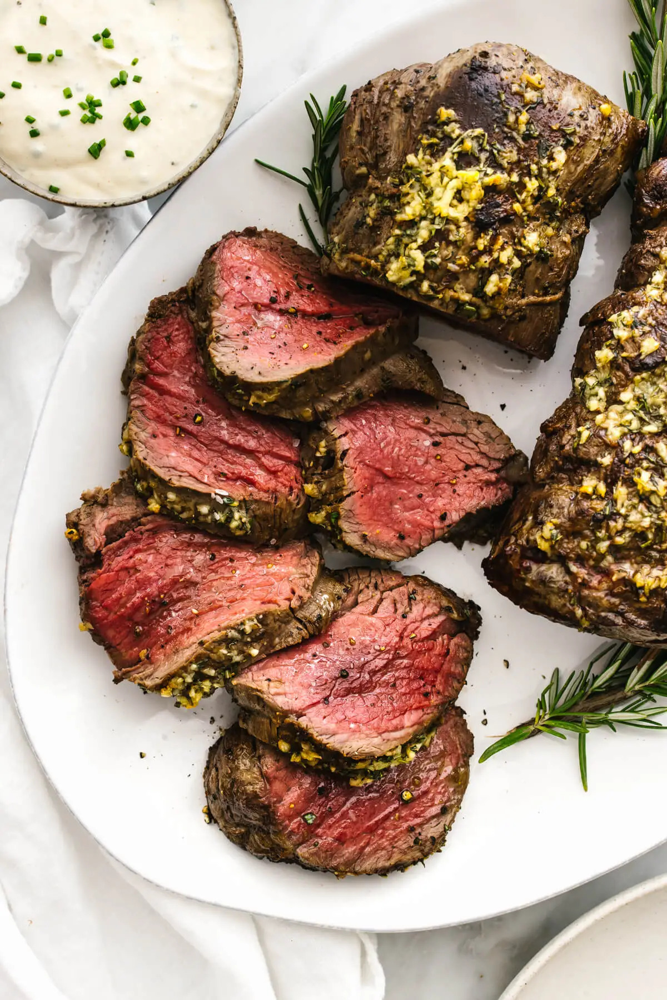

Beef Tenderloin Roast

Ingredients
Beef Tenderloin Roast
- 1 center-cut beef tenderloin roast (4 to 4 ½ pounds), trimmed and tied
- 2 teaspoons kosher salt
- 1 teaspoon freshly ground black pepper
- 2 tablespoons avocado oil
Garlic Herb Butter
- 6 tablespoons softened butter
- 6 garlic cloves, minced
- 1 teaspoon finely chopped fresh rosemary leaves
- 1 teaspoon finely chopped fresh thyme leaves
Instructions:
- Remove the beef tenderloin from the fridge and let it come to room temperature prior to cooking, about 1 to 2 hours.
- In a small bowl, mix together the butter, garlic, rosemary, and thyme. Set aside.
- Preheat the oven to 425°F (220°C). Slice the beef tenderloin in half, then trim and tie it up (if it hasn't already been done by the butcher).
- Use paper towels to pat any excess moisture from the beef tenderloin, then season both sides with salt and pepper.
- Heat the oil in a large cast-iron pan over medium-high heat. Once the oil is shimmering, add the beef tenderloin and brown for a few minutes on all sides, about 10 minutes total, to create a golden brown crust.
- Slather the butter herb mixture over the top side of the beef tenderloin, then transfer the entire pan to the oven. If using a probe thermometer, insert the probe before placing the tenderloin in the oven. Roast the beef tenderloin for 15-20 minutes, depending on how you like your meat cooked (see temperature tips above).
- Remove the beef tenderloin from the oven and transfer to a cutting board. Let it rest for 10 to 15 minutes, to allow the juices to redistribute. Then remove the twine and slice into 1-inch thick pieces. If you'd like, serve with horseradish sauce.
Click here to see a video showing this recipe step-by-step!